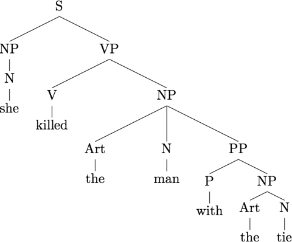

© 2005-2012 by Damir Cavar
Charty in Python was initially developed back in 2005 in Python 2.x, and used in my introduction classes to computational linguistics at Indiana University.
It is an implementation of an Early Parser, using an agenda for ambiguous paths, and it is tracking parses for the generation of trees or bracketed analyses of structurally ambiguous sentences. Charty is meant to be embedded, meaning, there is no specific GUI or front-end to it.
Charty reads context-free grammars (CFGs) without restrictions on the right-hand side, i.e. the left-hand side is restricted to one symbol only, while the right-hand side can be any combination of symbols or terminals. The grammars can of course contain recursion.
The initial implementation is in Python 2.x. A new version for Python 3.x is available for download as well.
Charty is published under the GNU Lesser General Public License Version 3.
Python 2.x code Files (download ZIP):
- ChartyPy.py (view code in browser) (pydoc HTML)
- PSGParse.py (view code in browser) (pydoc HTML)
Python 3.x code Files (download ZIP):
- ChartyPy3.py (view code in browser) (pydoc HTML)
- PSGParse3.py (view code in browser) (pydoc HTML)
How to use
I assume that you have either a Python 2.x or 3.x (they differ significantly!) installation on your computer. Mac OS X and Linux (like for example Ubuntu) come with it preinstalled in some version. Check the version by issuing the command
python --version
in a command-line interface (assuming you are using Terminal.app on Mac OS X, or the Terminal on Linux).
If you use Microsoft Windows as your OS, install Python and PyWin, use the Pythonwin IDE and get familiar with how to test and run programs and scripts with it.
If you use Python 3.x, I recommend that you install the Python version 3.2 or newer, make sure you also use the ChartyPy3.py and PSGParse3.py files.
Obtaining Python 3.x: Python.org or ActiveState.com
Place the code files in some folder together with the grammars.
The grammar file is a plain text file. It can be edited with any plain text editor, e.g. Notepad or Notepad++ on Microsoft Windows, jEdit, Vim or Emacs (Aquamacs) on Mac OS X or Linux systems. The grammar files are expected to be encoded in UTF-8. The line ending is irrelevant, i.e. it can be a Windows or a Unix one. The rules are simple CFG rules with one left-hand side symbol, and any combination of symbols and terminals in the right-hand side:
NP -> Art Adj N
The file can contain comments that are introduced with a #, as in the following two lines:
# Grammar:
S -> NP VP # simple sentence rule
The simple grammar parser does not support markup for optionality, using round brackets for example, neither regular expression operators. The symbols can contain all symbols except of #, = or >. Symbols cannot start with -, but they can contain -, so the following symbols are permitted:
NP
NP-SUBJ
ADJ_FEM
Rules contain a left-hand side and a right-hand side. The separating character sequence can be:
->
-->
==>
as well as similar combinations of minus or equal characters followed by a larger character.
You can define your own rules and experiment with the grammar. The grammars could be phrase structure rules as the examples above, or grammars of the following type, for example right linear grammars:
X -> a Y
Y -> b
Y -> b Z
Z -> a Y
The Charty script accepts several parameters. The parameter -h explains some of them briefly. Try the following commands in the command line tool:
./ChartyPy3.py -h
or
python3 ./ChartyPy3.py -h
You can make the ChartyPy3.py script executable with this command:
chmod +c ChartyPy3.py
Obligatory parameters are:
-g GRAMMARFILE
and
-i EXAMPLE_SENTENCE
An example call of the parser might look like this:
./ChartyPy3.py -g PSG1.txt -i “John loves Mary”
Important is to surround the input sentence with double quotes, as shown in the command above.
Optional parameters are:
-q or --quite for quite, i.e. the chart and the individual edge-formation steps are not printed to the screen. The default is, the parser prints out all edge formation steps and the final chart, before the analyses are printed.
-l or --latex to return the Qtree style Tree syntax for LaTeX typesetting (see also).
Using the example grammars of the package, the command line parameters and the corresponding output are:
Command:
./ChartyPy3.py -g psg2.txt -i "a b" -q -l
Output:
Parse: 1 of 2
\Tree [.X a [.Y b ] ]
Parse: 2 of 2
\Tree [.Z a [.Y b ] ]
Command:
./ChartyPy3.py -g PSG1.txt -i "John loves Mary" -q
Output:
Parse: 1 of 1
[S [NP [N John ] ] [VP [V loves ] [NP [N Mary ] ] ] ]
Command:
./ChartyPy3.py -g PSG1.txt -i "John loves Mary" -q -l
Output:
Parse: 1 of 1
\Tree [.S [.NP [.N John ] ] [.VP [.V loves ] [.NP [.N Mary ] ] ] ]
Command:
./ChartyPy3.py -q -g PSG1.txt -i "she killed the man with the tie"
Output:
Parse: 1 of 2
[S [NP [N she ] ] [VP [V killed ] [NP [Art the ] [N man ] ] [PP [P with ] [NP [Art the ] [N tie ] ] ] ] ]
Parse: 2 of 2
[S [NP [N she ] ] [VP [V killed ] [NP [Art the ] [N man ] [PP [P with ] [NP [Art the ] [N tie ] ] ] ] ] ]
Command:
./ChartyPy3.py -l -q -g PSG1.txt -i "she killed the man with the tie"
Output:
Parse: 1 of 2
\Tree [.S [.NP [.N she ] ] [.VP [.V killed ] [.NP [.Art the ] [.N man ] ] [.PP [.P with ] [.NP [.Art the ] [.N tie ] ] ] ] ]
Parse: 2 of 2
\Tree [.S [.NP [.N she ] ] [.VP [.V killed ] [.NP [.Art the ] [.N man ] [.PP [.P with ] [.NP [.Art the ] [.N tie ] ] ] ] ] ]
The last two trees can be visualized with LaTeX and Qtree (see instructions about how to use LatexIt on Mac OS X for that):
Parse: 1 of 2

Parse: 2 of 2
